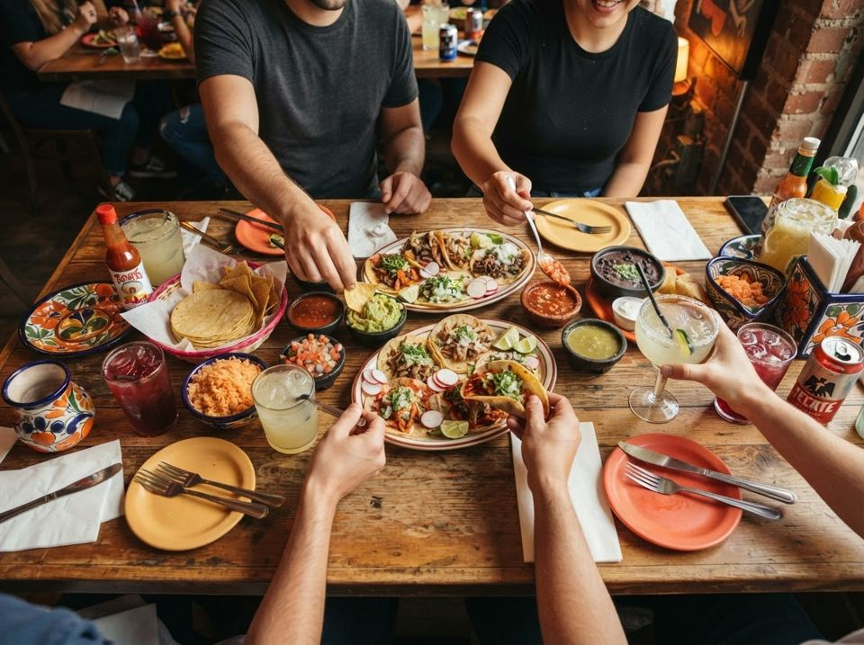

Content
- Titles are what happened, in a few words: First week at Arup, Married Tomás.
- Notes are yours: what you'd want to remember next time.
- How is short: Phone · 40 min, In person.
Component · Contacts · Content
A person's history, newest first: conversations, milestones and memories on a line.
A person's history on their profile, newest first, on a line: conversations you logged, milestones in their life, and memories. A dot in the kind's colour marks each one and the entry says its kind in words. A milestone sits in a tinted card with its tag (New job, Wedding). This is not the How long timeline, which shows a Popkin's length.
Loving the team, hates the commute. Thinking of moving closer to Piccadilly by Christmas. Tomás is pushing for a dog.
Bridges team. He’d been after this one for two years.
The ghost pepper one was a mistake.

.contact-timeline::before: a hairline through the dots..kind-dot: 10px, in the kind's colour; conversation coral, milestone sun, memory green..contact-timeline__meta: the date, how (Phone · 40 min) or the tag..contact-timeline__card: the title, the note and a photo; tinted for a milestone.Loving the team, hates the commute. Thinking of moving closer to Piccadilly by Christmas. Tomás is pushing for a dog.
<div style="width: 100%; max-width: var(--layout-measure);"><ol class="contact-timeline"><li class="contact-timeline__item" data-accent="coral"><span class="kind-dot" aria-hidden="true"></span><p class="contact-timeline__meta"><span class="contact-timeline__date">Sep 6</span><span class="visually-hidden">Conversation</span><span>Phone · 40 min</span></p><div class="contact-timeline__card"><h3 class="contact-timeline__title">First week at Arup</h3><p class="contact-timeline__body">Loving the team, hates the commute. Thinking of moving closer to Piccadilly by Christmas. Tomás is pushing for a dog.</p></div></li></ol></div>Bridges team. He’d been after this one for two years.
<div style="width: 100%; max-width: var(--layout-measure);"><ol class="contact-timeline"><li class="contact-timeline__item contact-timeline__item--milestone" data-accent="amber"><span class="kind-dot" aria-hidden="true"></span><p class="contact-timeline__meta"><span class="contact-timeline__date">Aug 31</span><span class="visually-hidden">Milestone</span><span class="contact-timeline__tag">New job</span></p><div class="contact-timeline__card"><h3 class="contact-timeline__title">Started as Senior Engineer at Arup</h3><p class="contact-timeline__body">Bridges team. He’d been after this one for two years.</p></div></li></ol></div>The ghost pepper one was a mistake.
<div style="width: 100%; max-width: var(--layout-measure);"><ol class="contact-timeline"><li class="contact-timeline__item" data-accent="teal"><span class="kind-dot" aria-hidden="true"></span><p class="contact-timeline__meta"><span class="contact-timeline__date">Aug 8</span><span class="visually-hidden">Memory</span></p><div class="contact-timeline__card"><h3 class="contact-timeline__title">Hot sauce tasting at his flat</h3><p class="contact-timeline__body">The ghost pepper one was a mistake.</p><img class="contact-timeline__photo" src="../../mocks/assets/images/tacos.jpg" alt="Hot sauce tasting at his flat"></div></li></ol></div>One size; the note keeps to the 34rem measure.
Loving the team, hates the commute. Thinking of moving closer to Piccadilly by Christmas. Tomás is pushing for a dog.
Bridges team. He’d been after this one for two years.
The ghost pepper one was a mistake.
Loving the team, hates the commute. Thinking of moving closer to Piccadilly by Christmas. Tomás is pushing for a dog.
Bridges team. He’d been after this one for two years.
The ghost pepper one was a mistake.
Static. The kind is in the words (a hidden "Conversation", the tag) as well as the dot's colour.
Each item sets data-accent for its kind; the dot reads --accent and the milestone card and tag --accent-tint. The line is --color-border-default.
An ordered list (ol), newest first. Each title is an h3 under the tab's heading.
| Key | Action |
|---|---|
| — | Not focusable; it is read in place. |
Not focusable.
Each meta starts with the date and a hidden kind ("Sep 6, Conversation, Phone · 40 min"). A photo's alt is the entry's title. The dot is hidden.
None.
Not a target.
The dot is decoration: kind is never told by colour alone.
Bridges team. He’d been after this one for two years.
Bridges team. He’d been after this one for two years.
.contact-timeline — its own block.
.timeline — already the How long timeline.
| Part | Token | Light | Dark |
|---|---|---|---|
| Line | --color-border-default | ||
| Dot | --accent | ||
| Milestone card | --accent-tint | ||
| Date | --color-fg-muted | ||
| Note | --color-fg-muted | ||
| Measure | --layout-measure | ||
<ol class="contact-timeline">
<li class="contact-timeline__item contact-timeline__item--milestone" data-accent="amber">
<span class="kind-dot" aria-hidden="true"></span>
<p class="contact-timeline__meta"><span class="contact-timeline__date">Aug 31</span><span class="visually-hidden">Milestone</span><span class="contact-timeline__tag">New job</span></p>
<div class="contact-timeline__card"><h3 class="contact-timeline__title">Started as Senior Engineer at Arup</h3><p class="contact-timeline__body">…</p></div>
</li>
</ol>| Class / attribute | Effect |
|---|---|
.contact-timeline | The list and its line. |
.contact-timeline__item--milestone | The tinted card and a larger title. |
.kind-dot | The kind's dot. |
.contact-timeline__tag | A milestone's kind. |
.contact-timeline__photo | A photo, cropped. |
Extracted from these mocks:
Drift fixed during extraction: the mocks named this block .timeline, which is the How long timeline's block; its line and flex rules would have leaked into name-your-popkin. Renamed .contact-timeline in the stylesheet and the mocks.